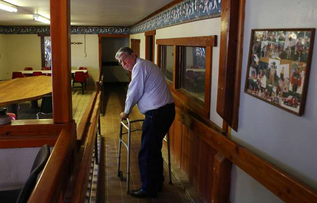
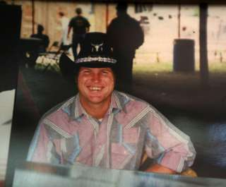

Goldthwaite, Tex.

On a dormant ranch outside the central Texas town of Goldthwaite, a man hunches over his walker to study a framed collage of faded photos. Dozens of young men in baseball caps, cowboy hats and even clown costumes smile back.
"Tiny, we called him, a colored boy who was here for several years," he says, pointing. He studies their faces. "Uh, let's see, who's in there. Gene Berg ..."
The man, Kenneth Henry, 73, directs his walker to a dim office that features an aerial photograph of the Atalissa schoolhouse. He takes a seat, then a breath, and tries to explain.
Back in the late 1960s, Mr. Henry, a turkey insemination expert, became partners with T. H. Johnson, the larger-than-life owner of this ranch. With the government's blessing, the rancher was running a for-profit program that took in young men from state institutions and trained them in agricultural work - and some basic life skills.
He called his philosophy "the magic of simplicity."
Unregulated arrangements like the Johnson ranch would later be derided as exploitative. But at the time they offered rare alternatives to institutions like the Abilene State School, where thousands with disabilities, from infants to the aged, lived in wards divided by need, often with little or no contact with families.
"A different time," says Jaylon Fincannon, a consultant in developmental disabilities and a former Texas deputy commissioner for intellectual disability services. "Thank God it's different now."
More than 1,000 young men were chosen over the years to embody this magic of simplicity, including Gene Berg, from the Abilene State School, by way of a small town outside Dallas.

Two decades on the front lines of human frailty had not prepared her for this. But Ms. Gonzales suppressed her panic to focus on the names of these 21 Texans soon to be in her care. Gene. Willie. Henry. Frank. Keith. The Penner brothers, Billy and Robert. Others.
He had been a well-behaved boy whose profound learning issues left his parents feeling helpless. One day they took him, their only son, to the sprawling Abilene institution, and were told not to visit for a while so that he could become acclimated. Gene was 12.
"It killed him," says his mother, Wanda Berg LaGrassa, her voice shredding. "It killed us."
Also chosen was Willie Levi, from the Mexia State School, by way of the city of Orange. His mother cleaned hotel rooms, and his father drank. "Had to pour cold water on him," the son recalls. "That's the only way I get him up."
Mr. Levi excelled in sports at Mexia. In 1970, the local newspaper reported that he had won the 880-yard race at the state championships for special schools.
"Gold medal," he says.
Among the many others were Billy and Robert Penner, sons of a long-haul truck driver and a housewife in Amarillo. One day their older brother, Wesley, came home after a long absence and was told that the boys had been sent to the Abilene school. The reason given: "Mom couldn't handle them anymore."
Most turkeys are bred with breasts so unusually large that they cannot reproduce naturally. This requires that the toms be caught, stimulated and milked; the semen rushed to the henhouse; and the females caught, flipped and inseminated. The young men who went to Goldthwaite often worked in turkey insemination, catching the birds.
The workers lived in a bunkhouse, and spent most of the little money they received every month at the Johnson family's roadside country store. "Hamburgers, and peanut brittle, and some soda water," Mr. Levi says. "Them long candies, Butternut."
The job could be difficult, and Mr. Johnson mercurial, but most of the men had nowhere else to go. At least in Goldthwaite, they were welcome at Johnson family gatherings - "Everybody was included," Mr. Henry says - and were counted when the boss man, T. H., made bed checks at night.
"One of those people you could love real easy and hate at the same time," Robert Womack, a former business partner, says. "The son of a bitch is dead and gone, but he cared about those boys, and he took care of them."
Before long, Mr. Johnson and Mr. Henry had secured contracts in several states for their turkey-savvy crews, including one at a processing plant somewhere in Iowa.